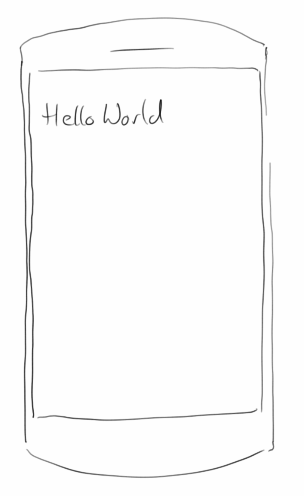
Introduction
Wenn wir uns fragen mit welchem unserer Computer interagieren wir am meisten, dann ist die Antwort ganz klar: unserem Handy. Smartphones sind aus unserem Leben nicht mehr wegzudenken. Sie begleiten uns täglich und überall hin. Deswegen ist auch das zentrale Thema dieses Buches das Programmieren von mobilen Endgeräten. Da weit über 80 Prozent aller mobilen Endgeräte Android als Betriebssystem haben, werden wir uns auch ausschließlich mit selbigem beschäftigten. Das hat auch einen weiteren gewaltigen Vorteil, denn die bevorzugte Programmiersprache für Android ist Java und das kennen wir ja bereits aus den vorherigen Semestern.
.
Introduction
Microsoft hat Linux immer ein bisschen belächelt. Und auf dem Desktop mag das sogar immer noch berechtigt sein. Aber auf dem Servermarkt war das schon von Anfang an nicht begründet, und auf den mobilen Endgeräten hat Linux seinen wahren Siegeszug angetreten, denn Android ist Linux.
Was die Hardware angeht, denkt man bei Android zunächst an Smartphones und Tablets. Es gibt aber auch Uhren (Smartwatch) und Fernseher (Amazon Fire TV) mit Android als Betriebssystem, und es gibt sogar Android Spielekonsolen, wobei die sich aber bisher nicht durchgesetzt haben.
Glücklicherweise werden wir sehr wenig mit dem zugrunde liegenden Betriebssystem zu tun haben. So wie uns bei der Java Entwicklung für den Desktop und den Server das Betriebssystem eigentlich relativ egal war, so ist uns das auch bei der Entwicklung von Android Programmen relativ egal. Alles was wir wissen müssen, sind die APIs die uns in Java zur Verfügung gestellt werden. Diese APIs sind es auch was "Google Java" und "Oracle Java" unterscheidet, und warum es dieses Buch gibt.
.
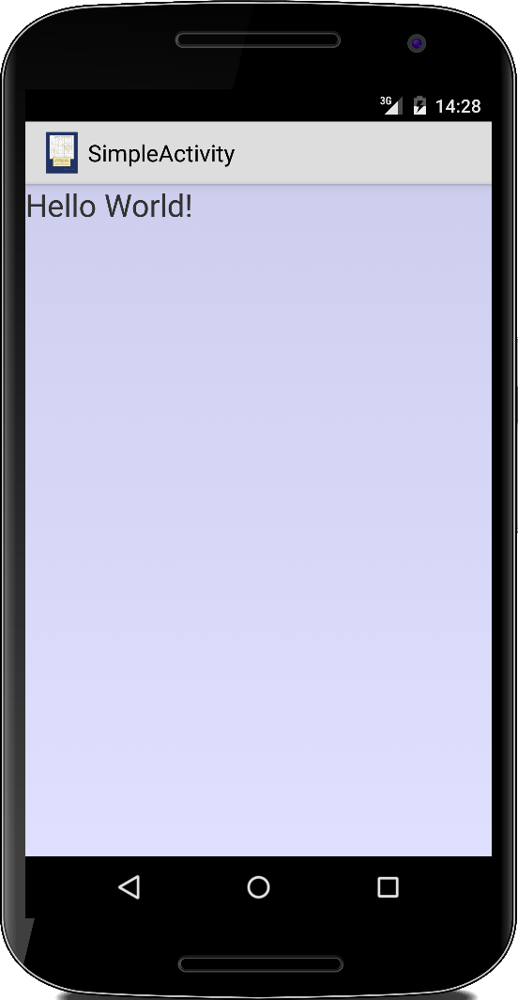Activity
Für unseren Einstieg in Android beginnen wir mit der Activity Klasse. Dabei handelt es sich um die Basisklasse für UI Anwendungen. Eine Activity ist das Äquivalent der Java Swing JFrame Klasse oder der ACM Program Klasse. Unsere erste Activity ist eine einfache "Hello World" Anwendung:
public class SimpleActivity extends Activity { @Override public void onCreate(Bundle savedInstanceState) { super.onCreate(savedInstanceState); LinearLayout ll = new LinearLayout(this); ll.setOrientation(LinearLayout.VERTICAL); TextView tv = new TextView(this); tv.setTextSize(24); tv.setText("Hello World!"); ll.addView(tv); setContentView(ll); } }
Was früher unsere init() Methode war (oder der Konstruktor), heißt jetzt onCreate(). Das LinearLayout entspricht grob dem FlowLayout wie wir es von Swing Anwendungen her kennen. Die Klasse TextView entspricht dem JLabel von Swing. Der Syntax ist ein klein bisschen anders, aber ansonsten verhalten sich die Klassen fast identisch. Damit wir unsere erste Activity allerdings zu sehen bekommen, benötigen wir noch einen Container, die Application.
.
Application
Für das Android Betriebssystem ist ein Android Programm eine Application. Applications werden in der AndroidManifest.xml Datei definiert und bestehen in der Regel aus einer oder mehreren Activities. Eine einfache AndroidManifest.xml Datei sieht wie folgt aus:
<?xml version="1.0" encoding="utf-8"?> <manifest xmlns:android="http://schemas.android.com/apk/res/android" package="de.variationenzumthema.android" android:versionCode="1" android:versionName="1.0" > <uses-sdk android:minSdkVersion="19" /> <application android:label="MainApplication" > <activity android:name="SimpleActivity" android:label="Title SimpleActivity" > <intent-filter> <action android:name="android.intent.action.MAIN" /> <category android:name="android.intent.category.LAUNCHER" /> </intent-filter> </activity> </application> </manifest>
Hier wird zunächst die Application definiert, sie hat den Namen "MainApplication". Innerhalb der Application gibt es eine Activity, unsere "SimpleActivity". Da eine Application aus mehreren Activities bestehen kann, müssen wir noch mitteilen wo es denn losgeht, und das ist was der Intent-Filter macht. Was das Coden angeht sind wir mit unserer ersten Anwendung fertig. War doch gar nicht so schwer.
.
Android Versionen
So wie alle Betriebssysteme, entwickelt sich auch Android und deswegen gibt es inzwischen schon einige verschiedene Versionen. Offiziell sind wir inzwischen bei Android 8, auch Oreo genannt, angekommen. Wichtig für uns ist das deswegen, weil mit jeder neuen Android Version zusätzliche Features hinzukommen. Wenn wir also in unserem Android Programm bestimmte Features verwenden, die es erst ab einer gewissen Version gibt, müssen wir das im AndroidManifest mitteilen, und das ist was die Zeile macht:
<uses-sdk android:minSdkVersion="19" />
Sie besagt, dass unser Programm nur auf Geräten läuft die mindestens das API-Level "19" haben. Auf älteren Geräten lässt sich unser Programm erst gar nicht installieren. API-Level "19" entspricht der Android Version 4.4, was momentan ca. 90% aller Android Geräte beinhaltet [1]. Eine Liste mit allen API-Leveln und den entsprechenden Android Versionen findet man in Referenz [2].
.
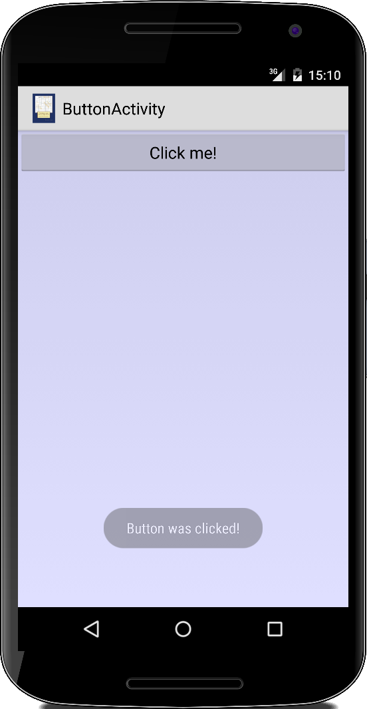ButtonActivity
Kommen wir zu unserer zweiten Activity. Es geht um die einfachste Form von User-Interaction: wir wollen auf einen Knopf drücken und ein Feedback erhalten. Wir verwenden dafür das Button Widget und verbinden es mit einem OnClickListener:
public class ButtonActivity extends Activity {
@Override
public void onCreate(Bundle savedInstanceState) {
super.onCreate(savedInstanceState);
LinearLayout ll = new LinearLayout(this);
ll.setLayoutParams(new LayoutParams(
LayoutParams.MATCH_PARENT,
LayoutParams.MATCH_PARENT));
ll.setBackgroundColor(0x200000ff);
ll.setOrientation(LinearLayout.VERTICAL);
Button btn = new Button(this);
btn.setTypeface(Typeface.create("sans-serif", Typeface.NORMAL));
btn.setText("Click me!");
btn.setOnClickListener(new OnClickListener() {
@Override
public void onClick(View v) {
Toast.makeText(v.getContext(),
"Button was clicked!",
Toast.LENGTH_SHORT).show();
}
});
ll.addView(btn);
setContentView(ll);
}
}
Die onClick() Methode wird jedesmal aufgerufen, wenn auf den Knopf gedrückt wird. Dort verwenden wir dann einen Toast um dem Nutzer eine kurze Mitteilung zu geben. Ein Toast benötigt eine Referenz zu einem Context, in der Regel die Activity selbst (deswegen this):
Toast tst = new Toast(this);
tst.makeText(this, "Button was clicked!", Toast.LENGTH_SHORT);
tst.show();
Ausserdem benötigt er den Text den er anzeigen soll und wie lange der Text angezeigt werden soll. Mittels der show() Methode wird der Toast dann angezeigt.
Die Art und Weise wie Buttons und Listener funktionieren ist vollkommen analog zu den Swing Klassen im normalen Java. Lediglich die Namen haben sich ein wenig geändert.
.
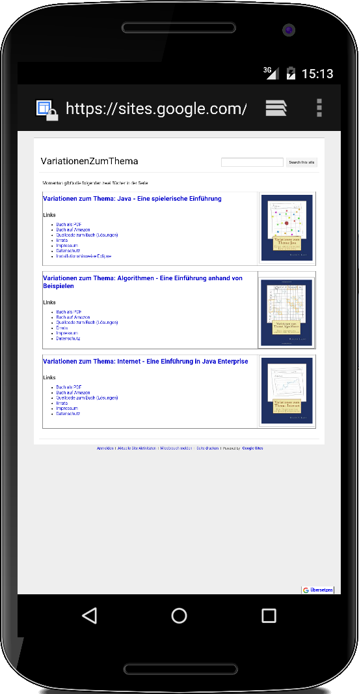Intent
Das wirklich coole an Android ist, dass wir nicht jedesmal das Rad neu erfinden müssen. Wenn wir z.B. aus unserer Anwendung heraus mal kurz den Browser öffnen wollen, dann müssen wir keinen neuen Browser Code schreiben, sondern wir können den bereits exisitierenden Browser verwenden. Dafür gibt es die Klasse Intent.
Wir wollen eine einfache BrowserActivity schreiben, die aus einem Knopf besteht, und wenn wir auf den Knopf drücken soll sich ein Browser öffnen. Die BrowserActivity ist vollkommen analog zur ButtonActivity, lediglich in der onClick() Methode unterscheidet sie sich:
...
public void onClick(View v) {
Uri uri = Uri.parse("http://www.variationenzumthema.de/");
Intent intent = new Intent(Intent.ACTION_VIEW, uri);
startActivity(intent);
}
...
Als erstes generieren wir eine Uri, in diesem Fall eine Webaddresse. Die übergeben wir der Intent Klasse mit der Aufforderung ACTION_VIEW, was so viel heißt wie "mach mal". Mittels startActivity() wird die andere Anwendung dann gestartet. Ist die andere Anwendung fertig, kehren wie wieder zu unserer ursprünglichen Anwendung zurück.
Allgemein kann man jede andere Android Anwendung damit starten. In der Regel beschränkt man sich aber auf die Standard Anwendungen. Mit den folgenden Zeilen, startet man die Standard Telefon Anwendung auf dem Gerät:
Uri uri = Uri.parse("tel:+49 123 456 7890");
Intent intent = new Intent(Intent.ACTION_VIEW, uri);
startActivity(intent);
Man kann aber auch eigene Activities starten:
Intent intent = new Intent(this, SimpleActivity.class);
startActivity(intent);
In den Projekten werden wir sehen, wie wir auf diese Art und Weise SMS versenden, neue Kalendareinträge machen, Barcodes scannen oder Videos aufnehmen können.
.
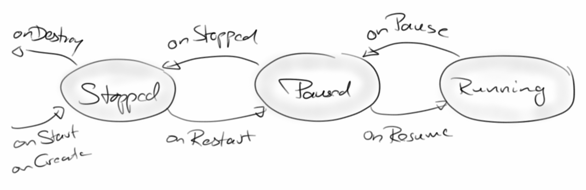Activity Lifecycle
In allen Betriebssystemen mit einer graphischen Benutzeroberfläche, also z.B. Windows, Mac oder Linux, gibt es immer nur ein Fenster das im Vordergrund, also aktiv, ist. Genauso ist das in Android: es kann immer nur eine Activity gerade active sein. Die anderen Activities sind dann im sogenannten paused Zustand. Zusätzlich gibt es in Android auch noch den stopped Zustand. Dieser ist deswegen notwendig, da manche Android Geräte sehr begrenzte Resourcen haben, und es manchmal nicht möglich ist alle paused Activities im Speicher zu halten. Die werden dann einfach "zwangs angehalten", also gestoppt. Deswegen gibt es in Android drei Zustände in denen sich eine Activity befinden kann:
- Active / Running
- Paused
- Stopped
Der Wechsel zwischen diesen Zuständen erfolgt über die sogenannten State Switching Methoden. Für dieses Wechseln (Switchen) ist der Activity Manager verantwortlich. Der weiß welche gerade die aktive Activity ist, und ist auch für das Neu-Anlegen, das Entfernen und Killen von Activities zuständig. In der Regel wird das Switchen vom Nutzer verursacht, weil er eine andere Activity startet. Es könnten aber auch externe Events sein, wie z.B. ein eingehender Telefonanruf. Der würde dafür sorgen, dass die momentan aktive Activity in den paused Zustand übergeht, und die TelefonActivity aktiv wird.
State Switching Methods
Wann immer ein Switching ansteht, sagt uns der Activity Manager kurz vorher Bescheid. Das tut er indem er eine der State Switching Methoden in unserer Activity aufruft. Für jeden Zustandswechsel gibt es genau eine Methode:
- onCreate(): wenn unsere Activity startet.
- onStart(): kurz bevor unsere Activity sichtbar wird.
- onResume(): wenn unsere Activity aus dem paused Zustand zurückkehrt.
- onPause(): wenn unsere Activity in den paused Zustand wechselt.
- onStop(): wenn unsere Activity in den stopped Zustand wechselt.
- onRestart(): wenn unsere Activity aus dem stopped Zustand zurückkehrt.
- onDestroy(): kurz bevor die Activity beendet wird.
Am einfachsten betrachtet man das Activity Lifecycle Diagramm und dann wird der Zusammenhang sofort klar. Es sei noch angemerkt, dass die Methoden onStop() und onDestroy() nicht zwingend aufgerufen werden. Wenn das Betriebssystem irgendwann einmal ganz dringend Resourcen benötigt, kann es also durchaus passieren, dass diese beiden Methoden nicht aufgerufen werden. Allerdings, die onPause() wird immer aufgerufen. Deswegen sollte man wichtige Daten immer in der onPause() Methode abspeichern.
.
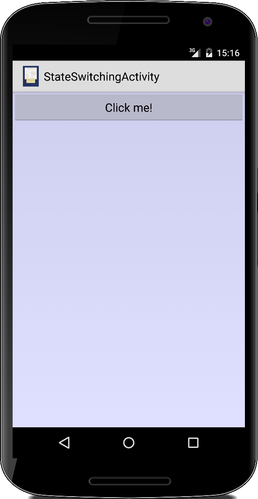StateSwitchingActivity
Schauen wir uns doch die State Switching Methoden mal an. Dazu schreiben wir eine kleine Activity in der wir alle State Switching Methoden überschreiben:
public class StateSwitchingActivity extends Activity {
private static final String TAG = "StateSwitchingActivity";
@Override
protected void onCreate(Bundle savedInstanceState) {
Log.i(TAG, "onCreate()");
super.onCreate(savedInstanceState);
...
}
@Override
protected void onStart() {
Log.i(TAG, "onStart()");
super.onStart();
}
@Override
protected void onResume() {
Log.i(TAG,"onResume()");
super.onResume();
}
@Override
protected void onRestart() {
Log.i(TAG,"onRestart()");
super.onRestart();
}
@Override
protected void onPause() {
Log.i(TAG,"onPause()");
super.onPause();
}
@Override
protected void onStop() {
Log.i(TAG,"onStop()");
super.onStop();
}
@Override
protected void onDestroy() {
Log.i(TAG,"onDestroy()");
super.onDestroy();
}
}
dabei sehen wir dann folgende Ausgabe im LogCat:
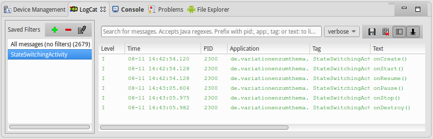
Beim Starten der Activity werden also die Methoden onCreate(), onStart() und onResume() nacheinander aufgerufen, und beim Schließen die Methoden onPause(), onStop() und onDestroy().
.
Logging
Da wir auf unseren Android Geräten keine Konsole zur Verfügung haben, funktioniert auch ein println() oder eine System.out.println(), wie wir es vielleicht von früher her gewohnt sind, nicht mehr. Dafür gibt es jetzt die Klasse Log, die wir gerade oben verwendet haben:
Log.i("StateSwitchingActivity", "onCreate()");
Hier ist das erste Argument in der Regel der Name der Activity und das zweite die Message die wir ausgeben möchten. Ausgegeben werden die Messages auf dem sogenannten LogCat Fenster in unserer Entwicklungsumgebung.
Es gibt verschiedene Levels von Severity, also wie wichtig oder schwerwiegend eine Message ist. Hier gibt es sechs verschiedene Levels:
- v(): verbose, wenn man sehr mitteilsam ist, dann kann man verbose verwenden, wird aber sehr selten benötigt.
- d(): debug, wird während der Entwicklungsphase zum Testen verwendet.
- i(): informational, tut genau das, gibt Informationen aus, die hilfreich sein könnten.
- w(): warning, sollte für unerwartete oder ungewöhnliche Vorkommnisse verwendet werden.
- e(): error, verwendet man wenn etwas ernsthaft schief gelaufen ist.
Der sechste ist die wtf() Methode für Spaßvögel.
.
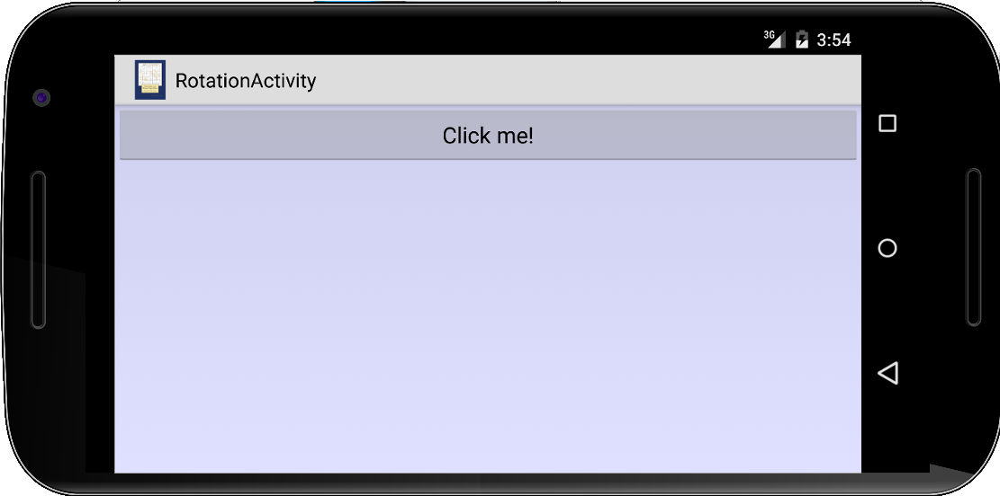RotationActivity
Wo wir gerade bei den State Switching Methoden sind: Etwas interessantes passiert, wenn wir unser Android Gerät um 90 Grad drehen (im Emulator geht das über Ctrl-F11 oder Ctrl-Cmd-F12, je nach Betriebssystem). Im LogCat sehen wir, dass nacheinander die Methoden
onPause()
onStop()
onDestroy()
onCreate()
onStart()
onResume()
aufgerufen werden, d.h., die Activity wird beendet und neu gestartet. Was zur Folge hat, dass alle Nutzerdaten etc. gelöscht werden (es sei denn wir haben sie vorher gespeichert).
Man kann diesen Neustart verhindern mit zwei kleinen Modifikationen. Zunächst muss man im AndroidManifest mitteilen, dass unsere Activity selbst Konfigurationsänderungen handelt:
...
<activity
android:name=".RotationActivity"
android:label="RotationActivity"
android:configChanges="keyboardHidden|orientation|screenSize" >
</activity>
...
Und natürlich müssen wir sie auch handeln, und das machen wir durch das Überschreiben der onConfigurationChanged() Methode:
@Override
public void onConfigurationChanged(Configuration newConfig) {
Log.i(TAG, "onConfigurationChanged()");
super.onConfigurationChanged(newConfig);
//setContentView(R.layout.myLayout);
}
Wenn wir die Anwendung jetzt testen und die Ausgabe im LogCat ansehen, stellen wir fest, dass die Activity nicht mehr beendet wird. Das ist jetzt nicht die feine Englische, und Google sagt auch, dass man das eigentlich nicht so machen soll, allerdings nennen sie auch keine wirklich einfache, nachvollziehbare Alternative.
.
Review
Wir haben nicht lange gekleckert und gleich unsere ersten Apps geschrieben. Dabei haben wir wichtige Konzepte kennengelernt, die wir für den Rest des Buches benötigen werden. Wir haben mit der Activity und dem AndroidManifest.xml begonnen. Mit dem TextView und dem Button haben wir unserer ersten UI Widgets verwendet. Der Toast wird für einfache, kurze Nachrichten an den Nutzer verwendet, während die Log Klasse Nachrichten für die Entwickler logt. Auch über die State-Switching Methoden und den Lifecycle den eine typische App durchläuft haben wir etwas gehört. Zum Abschluß haben wir uns noch intensiv mit Intents beschäftigt, mit denen man mit ganz wenig Befehlen bereits relativ viel erreichen kann.
.
Projekte
Schauen wir uns mal an was man mit Intents sonst noch so alles machen kann. Wir können z.B. Google Maps starten, SMS und Emails verschicken, oder einen Eintrag im Kalendar machen. Auch Barcodes scannen und Videos aufnehmen ist ganz einfach.
.
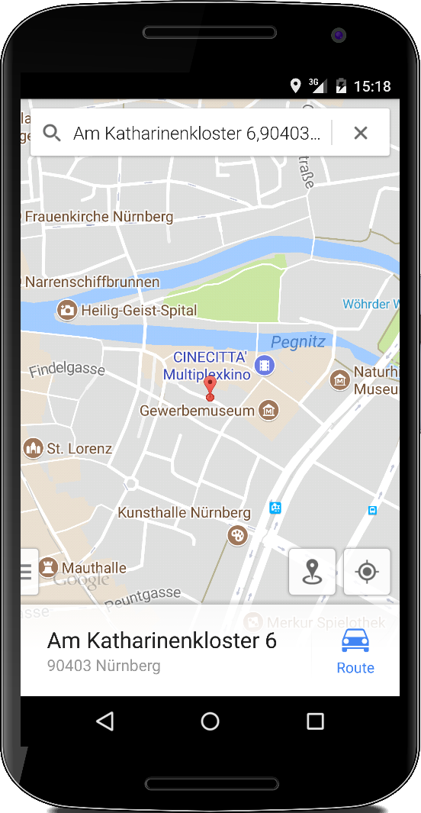GeoActivity
Genauso wie wir den Browser vorhin gestartet haben, können wir auch Google Maps starten, über einen Intent:
@Override
public void onClick(View v) {
Uri uri = Uri.parse("geo:0,0?q="+
"Am%20Katharinenkloster%206,90403%20Nuremberg,Germany");
Intent intent = new Intent(Intent.ACTION_VIEW, uri);
startActivity(intent);
}
Dabei können wir über die URI entweder die direkten Geo-Koordinaten mitgeben, oder wir können Maps über den Query Paramenter auch nach einer Adresse suchen lassen.
.
.
.
.
.
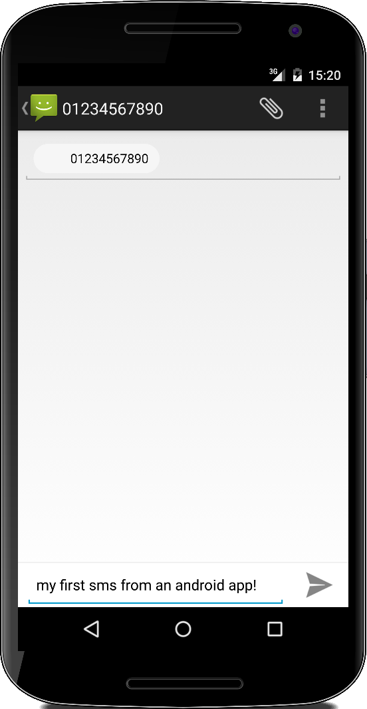SMSActivity
Wenn wir eine SMS versenden wollen, dann können wir das auch über einen Intent tun. Jedem Intent können wir Zusatzinformationen mitgeben:
@Override
public void onClick(View v) {
Intent smsIntent = new Intent(Intent.ACTION_SENDTO);
smsIntent.addCategory(Intent.CATEGORY_DEFAULT);
smsIntent.putExtra("sms_body", "my first sms from an android app!");
smsIntent.setType("vnd.android-dir/mms-sms");
smsIntent.setData(Uri.parse("sms:" + "0123 456 7890"));
startActivity(smsIntent);
}
Über putExtra() können wir zusätzliche Daten mitgeben, in diesem Fall die eigentliche SMS. Über die setType() Methode sagen wir, dass wir eine SMS verschicken möchten, was dann Android dazu veranlasst die vorinstallierte SMS Activity aufzurufen. Mit setData() teilen wir dann noch die Nummer mit, an die die SMS gehen soll. Wichtig, und das ist bei allen Intents so, die SMS wird nur vorbereitet, das eigentliche Senden der SMS muss immer noch der Nutzer selbst veranlassen. Das ist absichtlich so, wie wir später noch sehen werden.
.
.
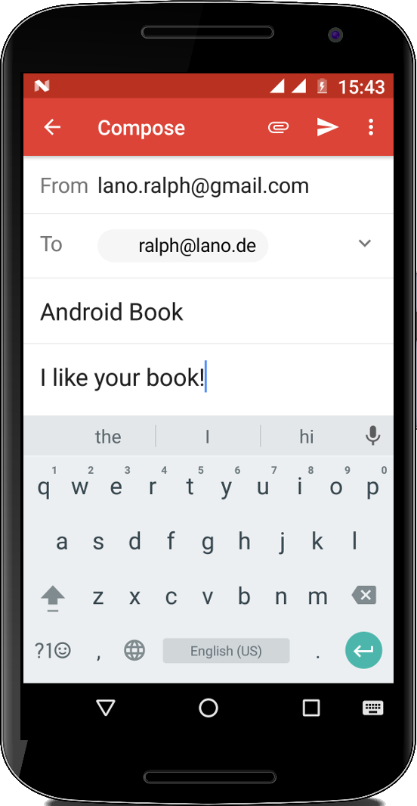EmailActivity
Ganz ähnlich wie SMS können wir auch Emails mit einem Intent versenden. Auch hier können wir dem Intent wieder Zusatzinformationen mitgeben:
@Override
public void onClick(View v) {
Intent emailIntent =
new Intent(Intent.ACTION_SENDTO,
Uri.fromParts("mailto", "ralph@lano.de", null));
emailIntent.putExtra(Intent.EXTRA_SUBJECT, "Android Book");
emailIntent.putExtra(Intent.EXTRA_TEXT, "I like your book!");
startActivity(Intent.createChooser(emailIntent, "Send email..."));
}
Über putExtra() geben wir die zusätzliche Daten mit, hier den Betreff und den Text der Email. Der Empfänger der Email wird über die Uri.fromParts() Methode mitgelteilt. Die createChooser() erlaubt es dem Nutzer aus verschiedenen Emails Clients auszuwählen, falls mehrere installiert sind. Wenn nur einer installiert ist, wird kein Chooser gezeigt.
.
.
.
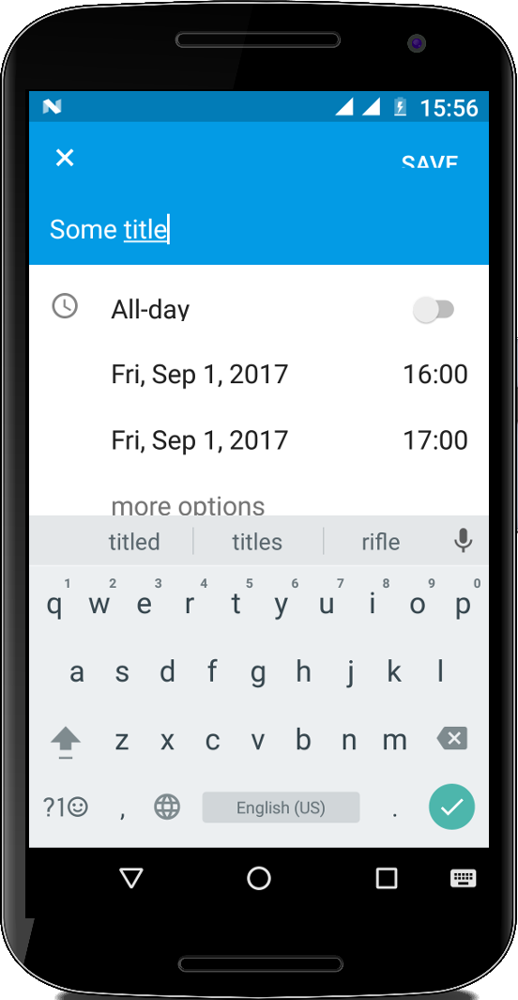CalendarActivity
Mittels Intents können wir auch Einträge im Kalendar unseres Nutzer vornehmen:
@Override
public void onClick(View v) {
Calendar beginTime = Calendar.getInstance();
beginTime.set(2017, 8, 1, 16, 00); //year, month, day, hour, minute
long startMillis = beginTime.getTimeInMillis();
Calendar endTime = Calendar.getInstance();
endTime.set(2017, 8, 1, 17, 00); //year, month, day, hour, minute
long endMillis = endTime.getTimeInMillis();
Intent intent = new Intent(Intent.ACTION_EDIT);
intent.setType("vnd.android.cursor.item/event");
intent.putExtra("title", "Some title");
intent.putExtra("description", "Some description");
intent.putExtra("beginTime", startMillis);
intent.putExtra("endTime", endMillis);
startActivity(intent);
}
Wir müssen zunächst Beginn und Ende des Eintrags in Millisekunden berechnen, dann den Typ auf "vnd.android.cursor.item/event" setzen, und den eigentlichen Kalendereintrag wieder mittels putExtra() an die Calendar App mitgeben. Auch hier wird der Eintrag nur vorbereitet, der Nutzer muss immer noch seine Zustimmung geben, damit die Eintragung auch wirklich vorgenommen wird.
.
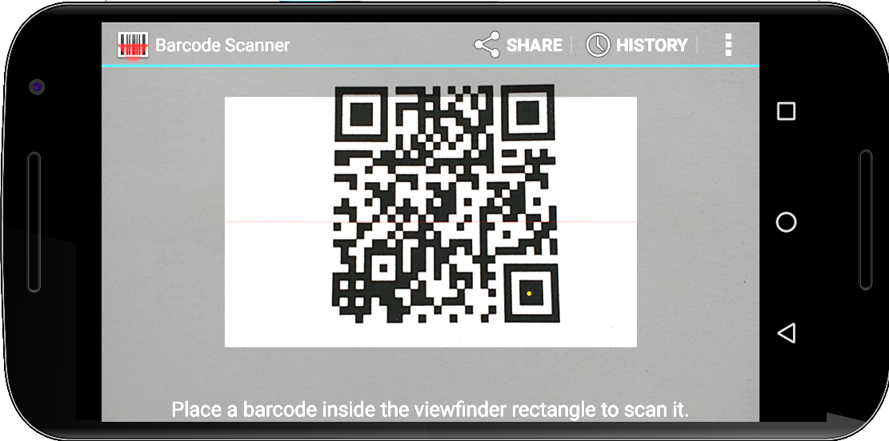BarcodeActivity
In den Beispielen die wir bisher gesehen haben, ging es darum über einen Intent eine andere Applikation zu starten und ihr evtl. noch etwas zusätzliche Information mitzugeben. Geht es aber auch umgekehrt, dass wir also Information von einer anderen Applikation erhalten?
Als Beispiel betrachten wir die BarcodeActivity: dabei geht es darum einen 2D Barcode einzulesen. Da auf den meisten Handys ja bereits eine solche App installiert ist, wäre es doch das einfachste die zu benutzen. Wir verwenden wieder einen Intent, dem wir ein bischen Zusatzinfos mitgeben, und starten ihn. Dieses mal aber nicht mit der startActivity() Methode, sondern mit der startActivityForResult() Methode:
public class BarcodeActivity extends Activity {
private TextView tv;
@Override
public void onCreate(Bundle savedInstanceState) {
...
@Override
public void onClick(View v) {
Intent intent = new Intent("com.google.zxing.client.android.SCAN");
intent.setPackage("com.google.zxing.client.android");
intent.putExtra("SCAN_MODE", "QR_CODE_MODE");
startActivityForResult(intent, 0);
}
...
}
public void onActivityResult(int requestCode, int resultCode, Intent intent) {
if (requestCode == 0) {
if (resultCode == RESULT_OK) {
String contents = intent.getStringExtra("SCAN_RESULT");
String format = intent.getStringExtra("SCAN_RESULT_FORMAT");
tv.setText(contents);
} else if (resultCode == RESULT_CANCELED) {
Toast.makeText(this, "Scan was canceled", Toast.LENGTH_SHORT).show();
}
}
}
}
Der Unterschied ist, dass im ersten Fall nichts passiert wenn die andere Anwendung fertig ist, im zweiten Fall wird aber die onActivityResult() Methode in unserer Activity aufgerufen. Man nennt so eine Methode auch einen Callback. In unserem Beispiel erhalten wir den Barcode der gescannt wurde.
.
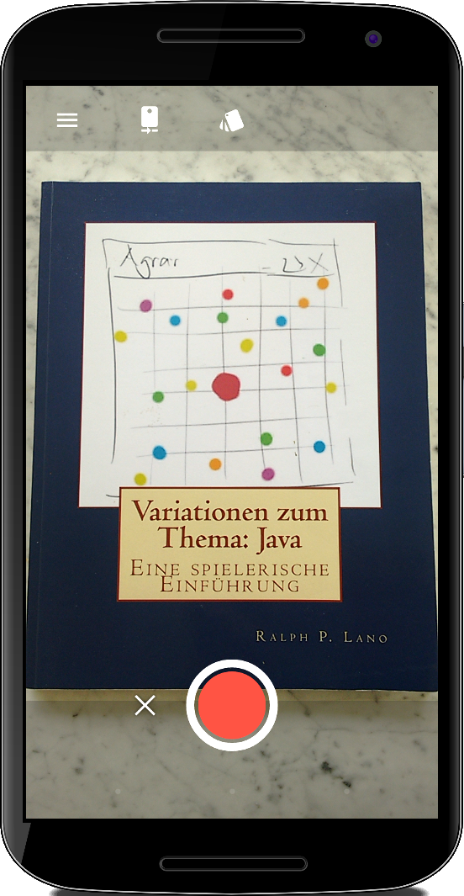RecordVideoActivity
Als zweites Beispiel für einen Intent der uns etwas zurückliefert betrachten wir die RecordVideoActivity. Wir möchten einen Video aufnehmen und dafür die ganz normale Kameraanwendung verwenden. Wir starten wieder einen Intent mittels der startActivityForResult() Methode:
public class RecordVideoActivity extends Activity {
private TextView tv;
@Override
public void onCreate(Bundle savedInstanceState) {
...
@Override
public void onClick(View v) {
Intent intent = new Intent(MediaStore.ACTION_VIDEO_CAPTURE);
startActivityForResult(intent, 1);
}
...
}
public void onActivityResult(int requestCode, int resultCode, Intent intent) {
if (requestCode == 1) {
if (resultCode == RESULT_OK) {
Uri videoLocation = intent.getData();
Toast.makeText(this, "Video:" + videoLocation, Toast.LENGTH_LONG).show();
} else if (resultCode == RESULT_CANCELED) {
Toast.makeText(this, "Recording was canceled", Toast.LENGTH_SHORT).show();
}
}
super.onActivityResult(requestCode, resultCode, intent);
}
}
Wenn wir dann fertig sind mit unserem Videodreh, wird wieder die onActivityResult() Methode aufgerufen mit dem Pfad wo die aufgenommene Videodatei zu finden ist.
.
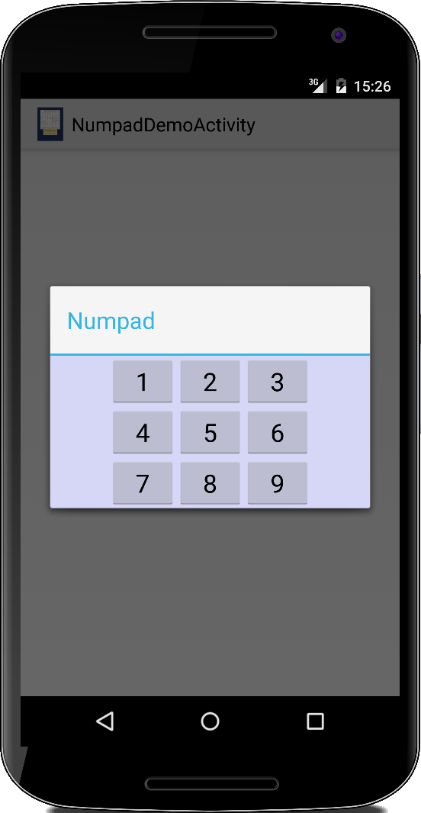NumpadActivity
Über die Methode putExtra() können wir anscheinend Daten von einer Activity an eine andere schicken. Was aber noch unklar ist, wie können wir denn aus der anderen Activity auf selbige zugreifen, und könnten wir evtl. wieder Daten zurück an die aufrufende Activity senden?
Betrachten wir das NumpadActivity Beispiel: dabei geht es darum, dass der Nutzer eine Zahl zwischen 1 und 9 auswählen soll. Wir wollen erst einmal Daten (einen int) von der NumpadDemoActivity an die NumpadActivity senden:
public class NumpadDemoActivity extends Activity {
@Override
public void onCreate(Bundle savedInstanceState) {
super.onCreate(savedInstanceState);
int btnId = 42;
Intent intnt =
new Intent(getApplicationContext(), NumpadActivity.class);
intnt.putExtra("id", btnId);
startActivityForResult(intnt, 1);
}
...
}
Das geht also via der putExtra() Methode, also wie gehabt.
Wie kommen die Daten denn bei der NumpadActivity an? Wir können uns eine Referenz auf den Intent geben lassen, und mittels getIntExtra() darauf zugreifen:
public class NumpadActivity extends Activity ... {
private int btnId = -1;
@Override
public void onCreate(Bundle savedInstanceState) {
super.onCreate(savedInstanceState);
btnId = getIntent().getIntExtra("id", -1);
Log.i(TAG, "id=" + btnId);
...
}
...
}
Diese "Extras" werden als Key-Value Paare abgespeichert und über den jeweiligen Key können wir auf die Werte zugreifen. Der zweite Parameter in der Methode getIntExtra() ist der Default-Wert, falls die aufrufende Activity keinen Wert mitgeliefert hat. Das vermeidet NullPointerExceptions.
So, nun wollen wir aber wieder Daten zurück an die NumpadDemoActivity schicken. Der Nutzer hat auf einen der neun Knöpfe gedrückt und in der onClick() Methode kreiieren wir einfach einen neuen Intent, den wir mit Daten füllen:
@Override
public void onClick(View v) {
int num = ((Button) v).getId();
Intent intent = new Intent();
intent.putExtra("id", btnId);
intent.putExtra("num", num);
setResult(RESULT_OK, intent);
finish();
}
Mit der finish() Methode beenden wir uns selbst, und kehren zur aufrufenden Activity, also NumpadDemoActivity zurück.
Und wie kommen wir jetzt an die Daten in der NumpadDemoActivity ran? Über die onActivityResult() Methode:
public class NumpadDemoActivity extends Activity {
...
public void onActivityResult(int requestCode, int resultCode, Intent data) {
super.onActivityResult(requestCode, resultCode, data);
if (requestCode == 1) {
if (resultCode == RESULT_OK) {
int id = data.getIntExtra("id", -1);
int num = data.getIntExtra("num", -1);
Log.i(TAG, "id=" + id + ", sNum=" + num);
}
}
}
...
}
Also, gar nicht so schwer.
.
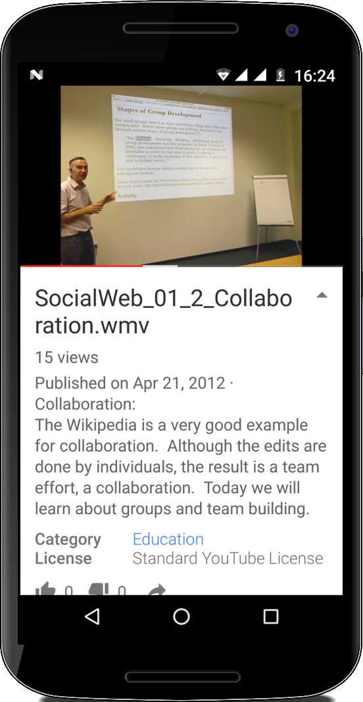YouTube, Google Maps and OpenStreetMap
Am Ende diese Kapitels wollen nur kurz noch drei weitere Anwendungsszenarien für Intents liefern: einmal das Einbinden von YouTube Videos in unsere Anwendung und das Einbinden von Google Maps oder OpenStreetMap.
Einen YouTube Video kann man ganz einfach über seine Webadresse einbinden:
Uri uri = Uri.parse("http://www.youtube.com/watch?v=6ytGmtmUVSU");
Intent intent = new Intent(Intent.ACTION_VIEW, uri);
startActivity(intent);
Bei Google Maps kann man einfach die Adresse, also z.B. "Am Katharinenkloster 6,90403 Nuremberg,Germany" angeben:
Uri uri = Uri.parse("http://maps.google.com/?q=Am%20Katharinenkloster%206,90403%20Nuremberg,Germany");
Intent intent = new Intent(Intent.ACTION_VIEW, uri);
startActivity(intent);
und bei OpenStreetMap übergibt man einfach den Längen- und Breitengrad des Ortes:
Uri uri = Uri.parse("http://www.openstreetmaps.org/?lat=49.452&lon=11.082&zoom=20");
Intent intent = new Intent(Intent.ACTION_VIEW, uri);
startActivity(intent);
In allen drei Szenarien wird effektiv der Browser verwendet.
.
Challenges
In diesem Buch geht es nicht nur um Android, sondern auch darum, dass wir jetzt seit mehr als zwei Jahren programmieren, und dass es Zeit wird auch mal etwas fortgeschrittenere Themen anzusprechen.
.
SEP: Inner, Local and Anonymous Classes
In Java gibt es neben den normalen Klassen auch noch zwei weitere: innere Klassen und anonyme Klassen. Die beiden nennt man manchmal auch innere Klassen im Gegensatz zu den normalen Klassen, die man auch äußere Klassen nennen könnte. Wir haben die anonymen Klassen schon mehrmals verwendet, ohne sie jedoch beim Namen zu nennen (daher der Name), z.B. bei der ButtonActivity:
public class ButtonActivity extends Activity {
@Override
public void onCreate(Bundle savedInstanceState) {
...
Button btn = new Button(this);
btn.setText("Click me!");
btn.setOnClickListener(new OnClickListener() {
@Override
public void onClick(View v) {
Toast.makeText(v.getContext(),
"Button was clicked!",
Toast.LENGTH_SHORT).show();
}
});
...
}
}
Was da innerhalb der setOnClickListener() Methode steht ist eine anonyme Klasse. Um zu verstehen, dass es sich dabei um eine anonymen Klasse handelt, wollen wir mal kurz die Metamorphose von einer normalen Klasse in eine lokale Klasse und schließlich in eine anonyme Klasse beobachten.
Normal Class
Wir beginnen mit zwei normalen Klassen, der ButtonActivity und der MyOnClickListener Klasse:
public class ButtonActivity1 extends Activity {
@Override
public void onCreate(Bundle savedInstanceState) {
...
Button btn = new Button(this);
btn.setText("Click me!");
btn.setOnClickListener(new MyOnClickListener());
...
}
}
class MyOnClickListener implements OnClickListener {
@Override
public void onClick(View v) {
Toast.makeText(v.getContext(), "Button was clicked!", Toast.LENGTH_LONG).show();
}
}
ButtonActivity ist wie gehabt, und MyOnClickListener ist eine eigene Klasse, die das OnClickListener Interface implementiert. Wir sehen, dass wir in der setOnClickListener() Methode eine neue Instanz der Klasse MyOnClickListener instanziieren.
Inner Class
Der Übergang zur inneren Klasse ist subtil:
public class ButtonActivity2 extends Activity {
@Override
public void onCreate(Bundle savedInstanceState) {
...
Button btn = new Button(this);
btn.setText("Click me!");
btn.setOnClickListener(new MyOnClickListener());
...
}
class MyOnClickListener implements OnClickListener {
@Override
public void onClick(View v) {
Toast.makeText(v.getContext(), "Button was clicked!", Toast.LENGTH_LONG).show();
}
}
}
Alles was sich ändert ist, dass die Klasse MyOnClickListener innerhalb der Klasse ButtonActivity deklariert wurde, also eigentlich wurde nur die geschweifte Klammer etwas anders gesetzt. Die Konsequenzen sind aber schon etwas schwerwiegender: zum Einen kann man die Klasse MyOnClickListener jetzt nur noch mit der Klasse ButtonActivity zusammen benutzen. D.h. sie hat ihre Eigenständigkeit verloren. Der Vorteil dieser Konstruktion ist allerdings, dass eine innere Klasse auf die Instanzvariablen ihrer äußeren Klasse zugreifen kann. Das kann sehr praktisch sein. Sehr häufig macht es auch noch Sinn die Sichtbarkeit der inneren Klasse auf private zu setzen.
Anonymous Class
Gibt es keine Notwendigkeit die innere Klasse beim Namen zu nennen (was sehr häufig der Fall ist), braucht man ihr auch gar nicht erst einen Namen zu geben.
public class ButtonActivity3 extends Activity {
@Override
public void onCreate(Bundle savedInstanceState) {
...
Button btn = new Button(this);
btn.setText("Click me!");
btn.setOnClickListener(new OnClickListener() {
@Override
public void onClick(View v) {
Toast.makeText(v.getContext(), "Button was clicked!", Toast.LENGTH_LONG).show();
}
});
...
}
}
Man macht hier zwei Dinge: zum Einen ruft man anstelle des Konstruktors von MyOnClickListener gleich den Konstruktor von OnClickListener auf. Zum Anderen schreibt man die Implementierung der zu überschreibenden Methoden gleich hinter den Konstruktor. Also bei einer anonymen Klasse handelt es sich also um eine innere Klasse die namenlos ist.
Which is best?
Welche sollte man wann verwenden? Da scheiden sich die Geister. Ganz klar die einfachste, pragmatischste, quick & dirty Lösung ist die anonyme Klasse. Hier ist der Code der zum Button gehört gleich beim Button und man kann auch gleich noch auf die Instanzvariablen der äußeren Klasse zugreifen. Allerdings verletzt die anonyme Klasse das softwareengineering Prinzip des Separation of Concerns, d.h., dass eine Klasse nur eine Sache tun sollte, und auch der Zugriff von einer Klasse auf die Instanzvariablen (speziell der privaten) einer anderen, verletzt eigentlich das Prinzip des Information Hiding. Allgemein kann man aber sagen, macht die anonyme Klasse zu viel, dann sollte sie wohl eine lokale Klasse werden. Wird eine lokale Klasse auch in anderen Klassen benötigt, dann sollte sie wohl eher eine normale Klasse werden.
.
Fragen
-
Erklären Sie den Lebenszyklus (life cycle) einer Android Aktivität.
-
Was sind mögliche Ursachen die Ihre Anwendung aus dem Active / Running-Zustand in den Pause-Status übergehen lassen? (Nennen Sie drei)
-
Zeichnen Sie das Activity Life Cycle Diagramm, mit den drei Zuständen in denen eine Activity sich befinden kann, und nennen Sie auch die wichtigsten State Switching Methoden.
-
In jeder Activity gibt es sieben sogenannte State Switching Methoden:
onCreate(), onStart(), onPause(), onResume(), onStop(), onRestart(), onDestroy()
Von diesen werden manchmal die onStop() und die onDestroy() nicht aufgerufen. Geben Sie einen Grund warum das sein könnte und was die für Sie daraus resultierenden Konsequenzen sind.
-
Welche der state-switching Methoden wird garantiert aufgerufen?
-
Nennen Sie drei Beispiele was man mit einem Intent machen kann.
-
Wie kann man Daten zwischen zwei verschiedenen Intents austauschen?
-
Es gibt zwei Möglichkeiten eine Activity oder einen Intent zu starten:
o startActivity()
o startActivityForResult()
Erklären Sie kurz den Unterschied.
-
Im folgenden sehen Sie fünf Beispiele für die Verwendung von Intents. Beschreiben Sie kurz, was der jeweilge Code macht.
Uri uri = Uri.parse("http://www.ohm-hochschule.de/"); Intent intent = new Intent(Intent.ACTION_VIEW, uri); startActivity(intent); -
Was macht man mit einem Toast?
-
Wofür wird die Datei “AndroidManifest.xml” verwendet? Geben Sie mindestens zwei Beispiele.
-
Warum benötigt man in Android eine Log Klasse?
-
Erklären Sie grob den Unterschied zwischen normalen, inneren und lokalen Klassen, und wann man welche verwenden sollte.
- Was ist aus Entwicklersicht zu beachten, wenn das Smartphone vom Nutzer um 90 Grad gedreht wird?
.
Referenzen
[1] Android version history, https://en.wikipedia.org/wiki/Android_version_history
[2] Codenames, Tags, and Build Numbers, https://source.android.com/source/build-numbers
.